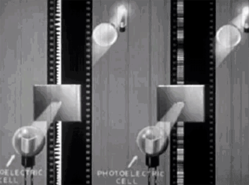

The Optical Audio Decoder is an exploration of the technology that for decades allowed film to include analog sound recordings alongside the motion pictures that they carried.
This project began when a friend gave me a pair of 16mm film projectors she was getting rid of while downsizing for a move. Because I wanted to try actually using them, I purchased a batch of film reels for them off eBay (meeting the seller in a parking lot to pick my reels out of hundreds he had in the trunk of his car).
When I got the reels home, I looked them over and realized they each had a small strip with a squiggly line running down one side of the film. It had never before occurred to me how sound was recorded on film, but that’s what I was looking at. That squiggly line was an on-film, optical representation of the sound meant to accompany the movie.
I was left with two questions: 1) Why was sound recorded this way? And 2) Could I figure out a way to play back one of these audio tracks? (Neither of my projectors was designed for audio playback.)
Let’s address the first question first, since it’s the simpler one to answer. Optical sound is just one of many technologies, ranging from scratches on wax cylinders to tiny dots read by lasers, that have been contrived over the years for recording audio.
Even though basically no one alive today was around during the early days of cinema, most of us are probably familiar with the fact that the first movies were silent. This is because film is an optical medium: It records light, and sound ain’t light, so you can’t record sound with film, at least not without getting creative.

A variety of solutions to this problem were developed over the years, but the one that stuck was the squiggly strip I found on my reels. You can read more about how optical sound works here, but essentially, it records sound as a line of varying width. Now, put a light source on one side of the that line and as the film slides past, a varying amount of light will be allowed to pass through to the other side. If you put a sensor in the path of that varying beam of light, you have now translated the information stored in that strip into an electrical signal, one that can be used to drive a speaker.
To make this work, though, you need one other thing: A narrow slit for the light to shine through. If you think about how sound works, it makes sense why this is required. If you’re listening to a friend talking about how their boss is a sociopath, for example, you are only hearing the sound they’re making right at that very moment in time. You’re not hearing what they said a second ago, or what they will be saying one second in the future. You’re only hearing the sounds they’re making right now. If we want to convert optical sound back into audible sound, we need to make sure our device is only playing back the sound from a single point in time, or as near to that as we can get. This is what the narrow slit does. By blocking out the sound from before and after, we are only hearing the sound from right now. The narrower the slit, the sharper the sound we hear. Of course, if you make the slit too narrow, not enough light will pass through it to be usable, so this becomes a balancing act.
My first attempts to create something that could play back optical sound were crude and did not work very well, or really at all. An LED is a convenient light source and it is maybe the only part of my original design that remained consistent. For a light sensor, I first tried using a photoresistor. This didn’t work for two reasons. For one, a photocell just isn’t sensitive enough at the low levels of light I was working with. For two, it doesn’t respond quickly enough to changing light levels. One estimate I saw online suggested that a cadmium sulfide photoresistor has a response time of about 10-60 milliseconds. That means that even under the most generous conditions, the highest frequency response you could expect out of a photo resistor would be about 100 hertz, which means the vast majority of sound recorded on a strip of film would be lost.
I then moved on to experimenting with photodiodes. These have much faster response times, possibly as short as 30 picoseconds. Using one of these, I started to hear faint sounds when I pulled a strip of film through the 3D-printed guide I made, but the volume level was so low that it could barely be heard.
The sensor that finally worked for me was a part called the OPT101. These little chips combine in a single package a rather largeish photodiode with something known as a transimpedance amplifier. I lack the electrical engineering background to explain how transimpedance amplifiers work, so I’ll just say the OPT101 worked for this project because it responds quickly and it’s very sensitive to even very low light levels.
The sensor was only half the battle though. Creating a slit that was narrow, precise, and light-blocking proved to be a challenge as well. The original 3D-printed part had a slit, but it was not narrow enough to reproduce good-quality sound. Additionally, there was enough light leakage through the plastic itself that it was further hampering playback. I eventually landed on a solution in the form of two single-edge razor blades. This was a suggestion from my friend Kenneth, who pointed out that razor blades have been used to create narrow slits in light diffraction experiments.
I redesigned the part that guides the film past the LED and the sensor so it held the blades, reassembled everything, and when I pulled a piece of film through by hand, a chill ran up my spine. Someone was speaking! I had succeeded in liberating a voice that had been trapped in that piece of film for more than half a century.
That was the hard part done. I had originally set out to add audio to one of my film projectors, but by this point, which was several weeks after I started, I had decided I wanted a standalone creation. I settled on something that would play back audio from loops of film.
The film loops are pulled through by a 3D-printed drive wheel lined with EVA craft foam for a gentle grip, and driven by a stepper motor controlled by a stepper driver and an ESP32. I chose the ESP32 because it can drive a stepper motor at much higher frequency than can an Arduino. That matters because the familiar hum of a stepper motor becomes much, much louder when those vibrations are transmitted into the film as it passes through the read head. An Arduino simply wasn’t capable of providing the microstepping pulses fast enough for the film to run at the correct playback speed.
This was a really fun project that offered a satisfying path to a final product. A lot of my projects hit seemingly insurmountable dead ends, or take a step back for every step forward, but not this one. Each change I made steadily improved the quality of the audio I was able to play. And when I finally reached the point where I could not only hear a voice coming from the film, but I could understand it as well, it felt a bit like making contact with a ghost during a séance. Too cool.
One thing that could use some improvement is isolating the stepper noise from the film loop. The ESP32 helps a lot, but there’s still a lot of a high-frequency whine that gets transmitted into the audio output. If I were going to do this project again, I would put a flywheel on the stepper motor and couple the flywheel to the film drive wheel with a rubber belt.